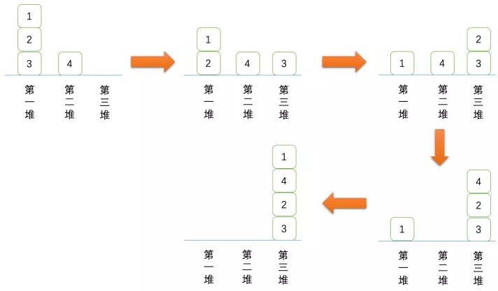
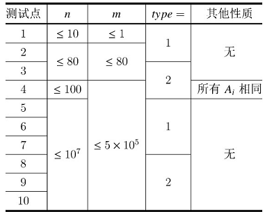

【样例说明】
有 $\frac{1}{4}$ 的概率从上到下的最终结果是 $\{1,2,3,4\}$。
有 $\frac{1}{4}$ 的概率从上到下的最终结果是 $\{1,2,4,3\}$。
有 $\frac{1}{4}$ 的概率从上到下的最终结果是 $\{1,4,2,3\}$。
有 $\frac{1}{4}$ 的概率从上到下的最终结果是 $\{4,1,2,3\}$。
所以最终有 $\frac{1}{4}$ 的概率第一个位置是 $4$，有 $\frac{3}{4}$ 的概率第一个位置是 $1$，所以第一个位置的期望分数是 $\frac{7}{4}$。
为了帮助你们更直观地了解洗牌的过程，我们在下面画出了结果是 $\{1,4,2,3\}$ 的过程：

【数据范围与提示】
对于所有的测试点：$3 \le n \le 10^7，1 \le m,Q \le 5 \times 10^5，0 \le A_i \le n，type \in \{1,2\}$。
每个测试点的具体限制见下表：

请注意我们并没有保证$Q \le n$。
这里我们给出离散型随机变量 $X$ 的期望 $\mathbb{E}[x]$ 的定义：
设离散随机变量 $X$ 的可能值是 $X_1,X_2,\cdots,X_k，Pr[X_1],Pr[X_2],\cdots,Pr[X_k]$，为 $X$ 取对应值的概率。则 $X$ 的期望为
$\mathbb{E}[x] = \sum^k_{i=1}X_iPr[X_i]$
 Comet OJ
Comet OJ